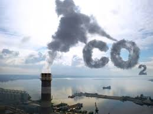

البيئة تواجه العديد من التحديات مثل تلوث الهواء والماء والتغير المناخي. الحلول تتضمن الطاقة المتجددة، التشجير، وإعادة التدوير.
المشكلة
الحل
تلوث الهواء
التحول إلى استخدام الطاقة المتجددة وتقليل الاعتماد على الوقود الأحفوري.
تلوث المياه
تحسين أنظمة الصرف الصحي ومعالجة المياه وإعادة تدوير المياه المستعملة.
التغير المناخي
تقليل انبعاثات غازات الدفيئة من خلال تحسين الكفاءة الطاقوية وتبني تقنيات الطاقة النظيفة.
إزالة الغابات
التشجير وإعادة زراعة الغابات، وتعزيز السياسات البيئية التي تحمي الغابات.
فيديو توضيحي لمشاكل البيئة
صور توضيحية لمشاكل البيئة

البيئة وحلولها
تعريف البيئة
البيئة هي كل ما يحيط بنا من مكونات طبيعية وبشرية تؤثر بشكل مباشر وغير مباشر على حياتنا اليومية. وتشمل البيئة جميع العناصر الحية وغير الحية مثل الهواء، الماء، التربة، النباتات، الحيوانات، والمعالم الجغرافية، حيث تتفاعل هذه العناصر مع بعضها البعض لتشكل نظامًا بيئيًا متكاملًا. هذا النظام البيئي يعتمد على توازن دقيق بين مكوناته للحفاظ على استمرارية الحياة على كوكب الأرض.
مكونات البيئة
تتألف البيئة من عدة مكونات رئيسية تعمل معًا لتشكيل شبكة متكاملة تدعم الحياة على الأرض. من أهم هذه المكونات:
الهواء: الغلاف الجوي الذي يحيط بالأرض يتكون من مجموعة من الغازات الأساسية للحياة مثل الأكسجين والنيتروجين. هذه الغازات تساهم في الحفاظ على الحياة من خلال دعم عملية التنفس لدى الكائنات الحية. ومع ذلك، فإن النشاط البشري، خاصةً من خلال الصناعة وحرق الوقود الأحفوري، أدى إلى تلوث الهواء بالملوثات مثل ثاني أكسيد الكربون والميثان، مما يسبب مشكلات صحية خطيرة للإنسان والحيوان، ويؤدي إلى تفاقم ظاهرة الاحتباس الحراري.
الماء: يشكل الماء نحو 70% من سطح الأرض، وهو عنصر حيوي لجميع أشكال الحياة. الماء ليس فقط ضروريًا للشرب، بل يستخدم أيضًا في الزراعة والصناعة وتوليد الطاقة. ومع ذلك، فإن التلوث المائي نتيجة الصرف الصناعي والزراعي، والتلوث بالمواد الكيميائية والبلاستيكية، يهدد مصادر المياه العذبة ويؤثر سلبًا على الحياة المائية وصحة الإنسان.
التربة: التربة هي الأساس الذي تقوم عليه الزراعة والنباتات، وهي مصدر رئيسي للغذاء للإنسان والحيوان. تعتبر التربة أيضًا بيئة خصبة لدعم التنوع البيولوجي، حيث تعيش فيها العديد من الكائنات الحية الدقيقة التي تلعب دورًا مهمًا في دورة المغذيات. ومع ذلك، فإن الاستخدام المفرط للمبيدات والأسمدة الكيميائية، بالإضافة إلى تآكل التربة بسبب الأنشطة الزراعية غير المستدامة، أدى إلى تدهور جودة التربة وفقدان خصوبتها.
النباتات والحيوانات: النباتات والحيوانات تعتبر جزءًا لا يتجزأ من البيئة، فهي توفر الغذاء والأكسجين، وتسهم في تحقيق التوازن البيئي من خلال شبكات الغذاء المتداخلة. التنوع البيولوجي مهم للحفاظ على صحة النظم البيئية، ومع ذلك، فإن فقدان المواطن الطبيعية بسبب إزالة الغابات، والتلوث، والصيد الجائر، أدى إلى انخفاض كبير في أعداد الأنواع الحيوانية والنباتية، مما يهدد التوازن البيئي.
التحديات البيئية المعاصرة
تشهد البيئة اليوم العديد من التحديات التي تؤثر بشكل مباشر على صحة الإنسان واستدامة النظم البيئية. من بين هذه التحديات:
التغير المناخي: الارتفاع المستمر في درجات الحرارة على مستوى العالم نتيجة لانبعاثات غازات الدفيئة أدى إلى تغييرات كبيرة في المناخ. هذه التغيرات تشمل ظواهر مثل ارتفاع منسوب مياه البحار، زيادة حدوث الأعاصير، والجفاف في مناطق عديدة. التغير المناخي ليس فقط مشكلة بيئية، بل هو أيضًا تحدٍ اقتصادي واجتماعي، حيث يؤثر على الزراعة، مصادر المياه، والهجرة البشرية.
التلوث: التلوث البيئي يشمل تلوث الهواء، الماء، والتربة بالملوثات الصناعية والكيميائية. هذا التلوث يسبب تدهور جودة الحياة على كوكب الأرض، ويؤدي إلى مشاكل صحية خطيرة مثل الأمراض التنفسية والسرطانات. التلوث البلاستيكي، على سبيل المثال، يشكل تهديدًا كبيرًا للحياة البحرية، حيث تبتلع الكائنات البحرية الجسيمات البلاستيكية، مما يؤدي إلى انسداد أجهزتها الهضمية ونفوقها.
فقدان التنوع البيولوجي: التنوع البيولوجي، الذي يشير إلى تنوع الأنواع الحية على كوكب الأرض، يواجه تهديدات كبيرة. إزالة الغابات، تدمير المواطن الطبيعية، الصيد الجائر، وتغير المناخ كلها عوامل تؤدي إلى انقراض العديد من الأنواع. هذا الانقراض يؤثر على سلاسل الغذاء ويقلل من قدرة النظم البيئية على التكيف مع التغيرات البيئية.
دور الإنسان في الحفاظ على البيئة
للإنسان دور محوري في حماية البيئة والحفاظ على التوازن البيئي من خلال اتخاذ إجراءات فعالة للحد من الأضرار البيئية. ومن بين هذه الإجراءات:
التشريعات والسياسات البيئية: قامت العديد من الحكومات بوضع قوانين صارمة لحماية البيئة والحد من التلوث. هذه القوانين تشمل معايير لانبعاثات المصانع، حماية المناطق الطبيعية، وتشجيع استخدام مصادر الطاقة المتجددة. على سبيل المثال، اتفاقية باريس للمناخ تعد واحدة من أهم الاتفاقيات الدولية التي تهدف إلى تقليل الانبعاثات الكربونية والحد من التغير المناخي.
التوعية البيئية: تعتبر التوعية البيئية جزءًا أساسيًا من الجهود الرامية إلى حماية البيئة. من خلال التثقيف والتوعية، يمكن نشر المعرفة حول أهمية الحفاظ على البيئة بين مختلف فئات المجتمع، وتعزيز الممارسات المستدامة. حملات التوعية، خاصة في المدارس والجامعات، تساعد في زرع قيم احترام البيئة لدى الأجيال القادمة.
التكنولوجيا الخضراء: الابتكارات التكنولوجية يمكن أن تلعب دورًا كبيرًا في تقليل التأثيرات البيئية السلبية. على سبيل المثال، تطوير تقنيات الطاقة المتجددة مثل الطاقة الشمسية وطاقة الرياح يقلل من الاعتماد على الوقود الأحفوري وبالتالي يقلل من انبعاثات غازات الدفيئة. كذلك، يمكن استخدام تقنيات إعادة التدوير والتصنيع النظيف لتقليل النفايات والتلوث.
استراتيجيات حماية البيئة
لحماية البيئة من التدهور المستمر، هناك العديد من الاستراتيجيات التي يمكن اتباعها لضمان الاستدامة البيئية:
إعادة التدوير: تعتبر إعادة التدوير من أهم الوسائل للتقليل من النفايات والمحافظة على الموارد الطبيعية. من خلال إعادة استخدام المواد القديمة، مثل الورق والبلاستيك والزجاج، يمكن تقليل الحاجة إلى استخراج المواد الخام وبالتالي تقليل التأثير البيئي الناجم عن التعدين والتصنيع.
الزراعة المستدامة: الزراعة المستدامة تعني استخدام أساليب زراعية تحافظ على التربة والمياه، وتحسن من جودة المحاصيل دون الإضرار بالبيئة. على سبيل المثال، يمكن استخدام تقنيات الزراعة العضوية التي تعتمد على استخدام الأسمدة الطبيعية بدلاً من الكيميائية، وتدوير المحاصيل للحفاظ على خصوبة التربة.
الطاقة المتجددة: التحول نحو استخدام مصادر الطاقة المتجددة مثل الطاقة الشمسية وطاقة الرياح أصبح أمرًا حيويًا للحد من الاعتماد على الوقود الأحفوري، الذي يعتبر المصدر الرئيسي لانبعاثات غازات الدفيئة. الطاقة المتجددة توفر حلولًا نظيفة ومستدامة لتلبية احتياجات الطاقة العالمية دون الإضرار بالبيئة.
.jpg)

.jpg)
.jpg)
.jpg)
.jpg)
.jpg)